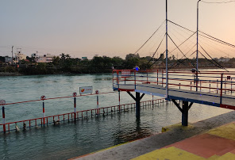

Haridwar ( हरिद्वार )

Since Times immemorial the hills of this region have attracted tourists and pilgrims from the world over. Tourism in #Uttrakhand has been envisaged to become the most important industry of the state employing a significant majority of people directly and indirectly with a major contribution to the state economy. Uttrakhand awesome beauty and calm of the stately Himalayas is a virtual paradise for tourists. The dream of this newly formed state is to make Uttrakhand as the most favored destination of travelers from within and abroad. Uttrakhand abounds in places of sanctity; age-old pilgrim centers the famous Char Dham, Hemkund Sahib, #Haridwar, Kailash Mansarovar Yatra, the Panch Kedar, Panch Bari & Panch Prayag, where the devout Hindus, Sikh & other communities converge to pay obeisance & feel closet to celestial beings. In Hindu Mythology Lord Vishnu is known as Hari & Shiva as Har. Dwar means gate and that is the reason that this place is known as #Hardwar or #Haridwar, as the gateway to the Four Shrines/Dham of Uttrakhand. Mentioned as Mayapuri, Gangadwar, Mokhsadwar in the ancient scriptures & epic. Haridwar always reminds us of major #Shaktipeeth for the devotees. Legend has it that the holy Ganga, the holiest of all rivers, which flows through this sacred city has actually been sanctified by the powerful Trinity of Hindu mythology & the center of the Pantheon Brahma, Vishnu & Mahesh. According to devotees, Haridwar is one of the four places (other three being Ujjain, Nasik, & Allahabad) upon which the Amrit-Nector of immortality emerging out of the churning ocean fell. This is manifested in two great events that take place at Haridwar – the memorable & the huge religious Mela Kumbh which happens once every 12 years & the Ardh Kumbh Mela, which comes once every six years. Well If you come to Haridwar for spiritual purpose then there are numerous places...read more
Premnagar Ashram
This Ashram belongs to Satpal Maharaj, a cabinet minister in Uttarakhand Government and located at the heart of the Haridwar. Before he was in Congress party. Satpal Maharaj a spiritual leader and a political figure has many followers specially in Uttarakhand, Uttar Pradesh,Bihar, West Bengal,Odisha. This ashram has a wide territory in which they have facility to stay, to organize a function, a homeopathy clinic etc. This Ashram's illegal encroachment was a matter of dispute for a long time and this causes several fights between Satpal maharaj's followers and oppositon. One of the Gate of this Ashram opens at the Haridwar-Jwalapur road(station road) and the opposite one at the Upari Gang Nehar( Ganga Canal) where a big bank is named as Prem Nagar ghat. People use to come at this ghat to take holy bath and to visit as well. Nearby places: Chandracharya chowk ,Shankar Ashram, Prem Nagar Ganga bridge , Bhagat singh chowk and Singhdwar are just at walking distance from this place(within 1 Km). यह आश्रम उत्तराखंड सरकार में कैबिनेट मंत्री सतपाल महाराज का है और हरिद्वार के मध्य में स्थित है। इससे पहले वह कांग्रेस पार्टी में...read more
Daksheswar Mandir

Daksha Mahadev Temple is a most prominent place of pilgrimage for Shaivaite, located in the town of Kankhal, Haridwar of Uttarakhand. This is very historic temple and connected with Lord Shiva and Goddess Sati. The Kankhal was the kingdom of the Raja Daksh and Sati his daughter. Daksha Mahadev Temple is located at the site where a grand Yajna was organised by the King Daksha in the past. Lord shiva and Devi Sati were not invited to this Yajna despite the fact that Lord Shiva was Daksha’s son-in-law. It was this place where Sati give up her life and Daksha’s was beheaded by Shiva’s gan. On regretting and repenting, Daksha’s was given back life. It’s a very well maintained Temple and very thin crowd.The temple houses the Yagna Kund wherein Sati Mata burnt herself. Adjacent to the main temple on the right side is the Das Mahavidya temple of Kali, Tara, Shodashi, Bhuvaneshvari, Bhairavi, Chhinnamasta, Dhumavati, Bagalamukhi, Matangi & Kamala. On the left of the main temple is the Daksha Ghat where devotees take a dip in the holy Ganga river. There are a few shops at the entrance of the premises which sell Rudraksh, Shivlings, gems & stones. The peace & serenity as well as the holiness of this place compels devotees to visit the temple each time.Daksha Mahadev Temple is about 6 kms from Har-Ki-Pauri and Kankhal is very close to Haridwar. उत्तराखंड के हरिद्वार के कनखल शहर में स्थित शैव के लिए दक्ष महादेव मंदिर ...read more
Bhimgoda Barrage

<
The Bhimgoda Barrage, also referred to as the Bhimgoda Weir or Bhimgoda Head Works, is a barrage on the Ganges River at Har ki Pauri near Haridwar in Haridwar district, Uttarakhand, India. Built as the headworks of the Upper Ganges Canal, an initial barrage was completed by 1854 and replaced twice; the final one completed in 1983. The primary purpose for the barrage is irrigation but it also serves to provide water for hydroelectric power production and control floods. The area behind the barrage is known as the Neel Dhara Bird Sanctuary and is a popular destination for various waterbirds and tourists. भीमगोड़ा बैराज, जिसे भीमगोड़ा वीर या भीमगोडा हेड वर्क्स के रूप में भी जाना जाता है, हरिद्वार...read more